Sentryx.
Sentryx.
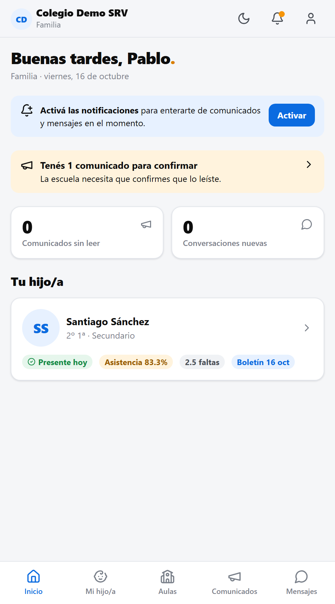
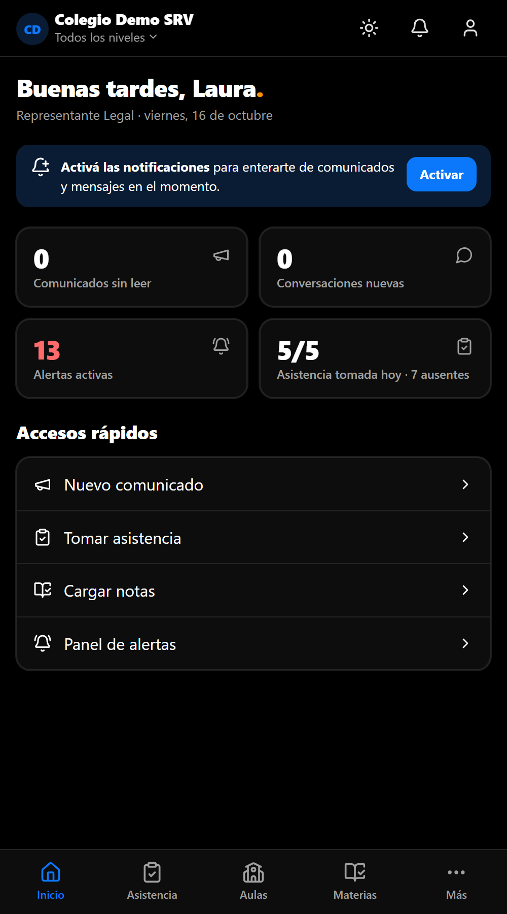
Manual de usuario · v1.0
Tu escuela,
en un solo lugar.
Guía práctica para familias, docentes, preceptoría, conducción y administración: cómo hacer cada cosa importante en Sentryx, paso a paso.
ComunicadosMensajesAulasNotas y boletinesAsistenciaAlertas
Contenido
¿Qué vas a encontrar?
Cada capítulo está pensado para un rol. Leé "Primeros pasos" y después el capítulo que te corresponde.
1
Primeros pasos
Ingresar, instalar en el celular, notificaciones, modo oscuro, colegio y nivel.
2
Roles y permisos
Qué puede ver y hacer cada persona.
3
Familias
Comunicados, boletín, asistencia, aulas y mensajes.
4
Docentes
Materias, carga de notas, aulas, comunicados y archivos.
5
Preceptoría
Tomar asistencia, justificar y seguir alertas.
6
Conducción
Comunicados, alertas, cierre de períodos y boletines.
7
Administración
Institución, estructura, aulas, personal, familias y archivos.
8
Preguntas frecuentes
Las dudas más comunes y cómo resolverlas.
¿Qué es Sentryx?
Sentryx es la plataforma escolar de SRV que reúne en un solo lugar la comunicación y el seguimiento académico de la escuela. Funciona desde el navegador del celular o la computadora y se puede instalar como una app.
📣 Comunicados
La escuela informa a todo el colegio, a un nivel, a un curso o a una familia. Se puede pedir confirmación de lectura.
💬 Mensajes
Chat privado entre familias y docentes, preceptoría o la dirección del nivel, siempre sobre un alumno.
🏫 Aulas
Cada curso tiene su aula con docentes, alumnos, materiales, videos, tareas y comunicados.
📝 Notas y boletines
Carga por materia adaptada a cada nivel. Las familias ven el boletín cuando la escuela lo publica.
✅ Asistencia
Se toma en segundos desde el celular. La familia ve las faltas de su hijo al instante.
🚨 Alertas
Avisos automáticos cuando un alumno supera las reglas de inasistencia que define la escuela.
Capítulo 1 · Para todos
Primeros pasos.
Cómo entrar por primera vez y dejar Sentryx listo en tu celular.
Ingresar
- Abrí el link de tu colegio que te envió la escuela (por ejemplo app…/c/nombre-del-colegio). Vas a ver el nombre y el escudo de tu colegio.
- Escribí tu email o tu DNI (sin puntos). Las familias sin email ingresan siempre con el DNI.
- Escribí la contraseña temporal que te dio la escuela y tocá Ingresar.
- La primera vez, Sentryx te pide elegir una contraseña propia (mínimo 8 caracteres).
🔑¿Olvidaste tu contraseña? Tocá ¿Olvidaste tu contraseña? e ingresá tu email: te llega un enlace para crear una nueva (vale 1 hora). Si no tenés email cargado, pedile a la secretaría que te la restablezca.
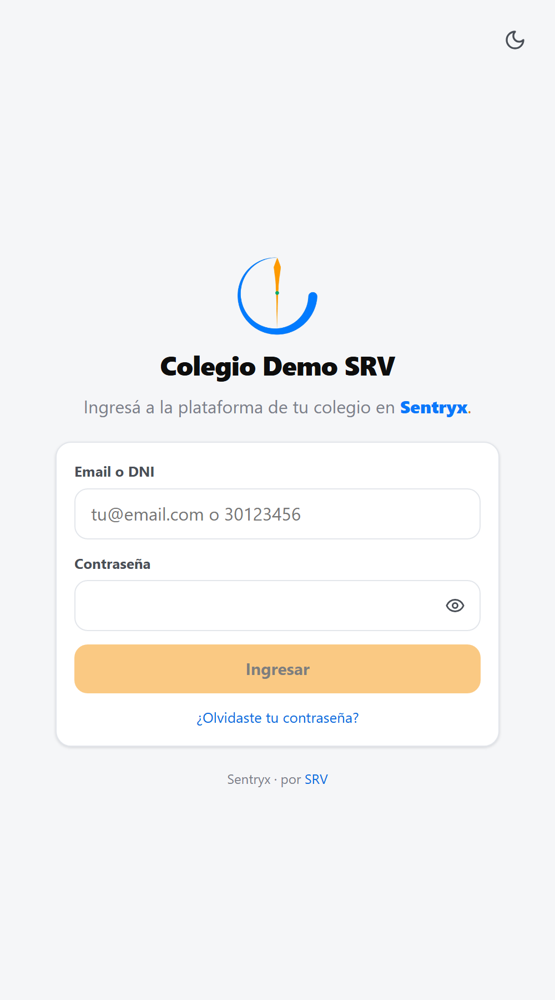
Ingreso con la identidad del colegio
Instalar Sentryx en el celular
Sentryx no se descarga de ninguna tienda: se agrega a la pantalla de inicio en segundos y queda como una app más.
🤖 Android (Chrome)
- Abrí el link del colegio en Chrome.
- Tocá el menú ⋮ (arriba a la derecha).
- Elegí Instalar app o Agregar a pantalla principal.
🍎 iPhone (Safari)
- Abrí el link del colegio en Safari.
- Tocá Compartir (el cuadrado con la flecha).
- Elegí Agregar a inicio y abrí Sentryx desde ese ícono.
Activar las notificaciones
Así te enterás de comunicados, mensajes y avisos en el momento, aunque tengas la app cerrada.
- En la pantalla de Inicio aparece el aviso Activá las notificaciones.
- Tocá Activar y aceptá el permiso del celular.
📱En iPhone las notificaciones solo funcionan si Sentryx está agregado a la pantalla de inicio (paso anterior) y lo abrís desde ese ícono.
Modo claro y modo oscuro
Tocá el ícono de luna / sol arriba a la derecha. Sentryx recuerda tu elección; si no elegís nada, sigue el modo de tu celular.
Campana de notificaciones
La campana muestra todos tus avisos recientes. El punto naranja indica que hay algo sin leer; tocá un aviso para ir directo a lo que corresponde.
Modo oscuro · vista de conducción
Colegio y nivel
Arriba de todo ves el escudo y el nombre de tu colegio. Si trabajás en más de un colegio, o tenés a cargo más de un nivel (por ejemplo, la Representante Legal), tocá el nombre del colegio para elegir:
- Nivel: Todos, Inicial, Primario o Secundario. Al elegir uno, toda la app (inicio, aulas, alumnos, asistencia, alertas) muestra solo ese nivel.
- Colegio: si pertenecés a más de una institución, cambiás de colegio desde el mismo lugar.
Capítulo 2 · Seguridad de la información
Roles y permisos.
Cada persona ve únicamente lo que le corresponde. Una familia solo ve a sus hijos; un docente, sus cursos y materias; la Rectora de Secundario, su nivel.
| Rol | Alcance | Puede |
|---|
| Representante Legal | Todo el colegio | Todo: estructura, personal, notas, boletines, alertas, comunicados a toda la escuela. |
| Dirección / Rectoría | Su nivel (o todo el colegio) | Todo lo de su nivel. La estructura del colegio solo si tiene a cargo toda la escuela. |
| Vicedirección | Su nivel | Igual que Dirección, sin modificar la estructura. |
| Secretaría | Todo el colegio | Alta de personas y familias, comunicados, publicar boletines, ver notas y asistencia. |
| Administración | Todo el colegio | Alta de personas y familias, comunicados. |
| Preceptoría | Su nivel o sus cursos | Tomar asistencia, seguir alertas, comunicados a sus cursos, ver notas. |
| Docente | Sus cursos y materias | Cargar notas de sus materias, publicar en sus aulas, comunicados a sus cursos, mensajes. |
| Familia | Sus hijos | Ver comunicados, aulas, boletín publicado y asistencia; escribir a docentes y conducción del nivel. |
| Acción | Fam. | Doc. | Prec. | Secr. | Adm. | Cond. | R. Legal |
|---|
| Leer comunicados y aulas | ✔ | ✔ | ✔ | ✔ | ✔ | ✔ | ✔ |
| Enviar comunicados | — | sus cursos | sus cursos | ✔ | ✔ | ✔ | ✔ |
| Cargar notas | — | sus materias | — | — | — | corregir | corregir |
| Tomar asistencia | — | — | ✔ | — | — | ✔ | ✔ |
| Publicar boletines | — | — | — | ✔ | — | ✔ | ✔ |
| Reglas de alertas | — | — | — | — | — | ✔ | ✔ |
| Alta de personal y familias | — | — | — | ✔ | ✔ | ✔ | ✔ |
| Estructura (aulas, materias) | — | — | — | — | — | * | ✔ |
* Solo Dirección o Rectoría con alcance sobre todo el colegio. Todos los cambios sensibles (notas, asistencia, roles, publicaciones) quedan registrados con fecha y autor.
Capítulo 3
Familias.
Madres · Padres · Tutores
La pantalla de Inicio
Es tu resumen del día. De un vistazo ves:
- Si hay comunicados para confirmar (aviso naranja).
- Cuántos comunicados y conversaciones nuevas tenés.
- La tarjeta de cada hijo: si está presente o ausente hoy, su porcentaje de asistencia, la cantidad de faltas y la fecha del último boletín.
Tocá la tarjeta de tu hijo para ver toda su información.
La barra de abajo
Inicio · Mi hijo/a · Aulas · Comunicados · Mensajes. Un punto naranja indica que hay algo nuevo.
Leer y confirmar comunicados
- Entrá a Comunicados. Los no leídos aparecen resaltados y con un punto.
- Tocá el comunicado para leerlo completo y abrir sus adjuntos (PDF, fotos, documentos).
- Si dice "Requiere confirmación", tocá Confirmo que lo leí. La escuela ve tu confirmación al instante.
💡Debajo de cada comunicado figura por cuál de tus hijos lo recibiste, útil si tenés hijos en distintos cursos o niveles.
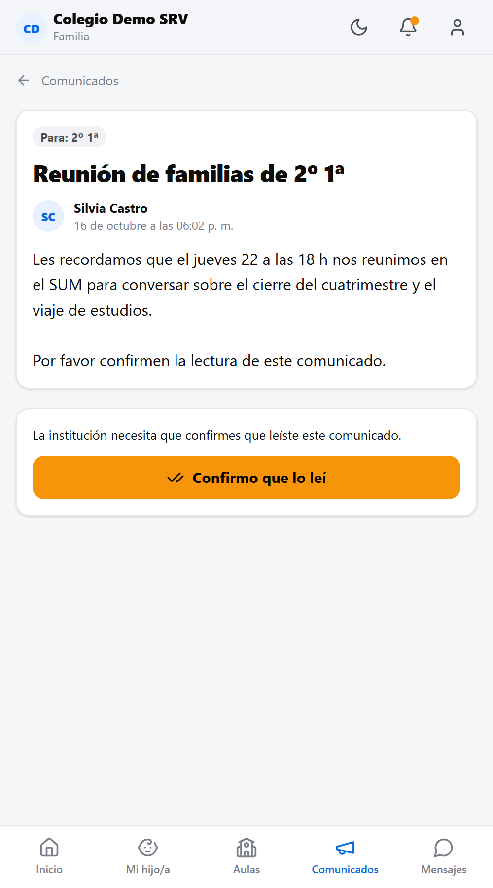
Comunicado con confirmación de lectura
Boletín y asistencia de tu hijo
- Tocá Mi hijo/a (o la tarjeta de tu hijo en Inicio).
- En Boletín ves las notas por materia de los períodos que la escuela ya publicó.
- En Asistencia ves el porcentaje, las faltas, las llegadas tarde y cuáles están justificadas.
- En Datos ves quiénes están autorizados a retirarlo.
¿Cómo se lee el boletín?
- Secundario: 2 cuatrimestres con 2 bimestres cada uno. El 1º y 3º bimestre tienen nota conceptual (Avanzado, Suficiente, En proceso, Insuficiente); el 2º y 4º, nota numérica de 1 a 10. La nota final es el promedio de las numéricas.
- Primario: 3 trimestres con escala conceptual (Sobresaliente a Insuficiente).
- Inicial: informes escritos por la docente.
- Lo que aparece en rojo está por debajo de lo esperado.
Con Imprimir podés guardarlo como PDF.
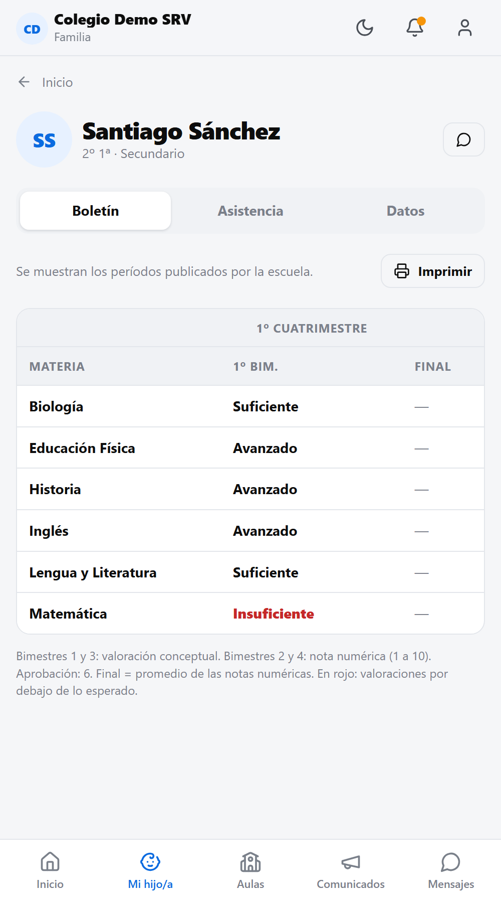
Boletín de Secundario
El aula de tu hijo
Cada curso tiene su aula. Entrá desde Aulas:
- Muro: materiales, videos, links y tareas que publican los docentes, con fecha de entrega. Podés filtrar por materia.
- Comunicados: todo lo que la escuela envió a ese curso, a su nivel o a todo el colegio.
- Integrantes: los docentes del curso con su materia. Por privacidad, solo ves a tus propios hijos entre los alumnos.
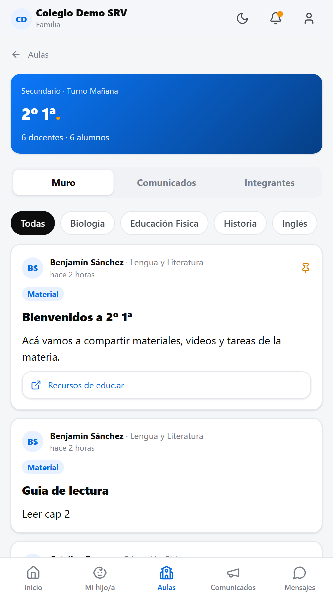
Muro del aula
Escribirle a un docente o a la dirección
- Entrá a Mensajes y tocá + Nuevo.
- Elegí sobre qué hijo querés consultar.
- Elegí a quién: aparecen solo los docentes de su curso (con su materia), preceptoría, la conducción de su nivel y secretaría.
- Escribí un asunto y tu mensaje, y tocá Enviar.
🔒Las conversaciones son privadas: solo las ven las personas que participan. Si el docente lo necesita, puede sumar a un directivo y vas a ver el aviso en la conversación.
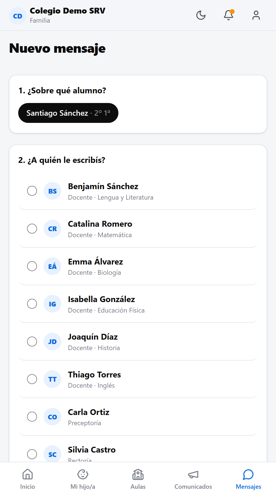
Nuevo mensaje: alumno y destinatario
Conversar en tiempo real
La conversación funciona como un chat: las respuestas aparecen al instante y, si tenés la app cerrada, te llega una notificación.
- Tocá el clip para adjuntar una foto o un PDF (por ejemplo, un certificado médico).
- Si la escuela cierra la conversación, vas a ver el aviso y podés iniciar una nueva cuando quieras.
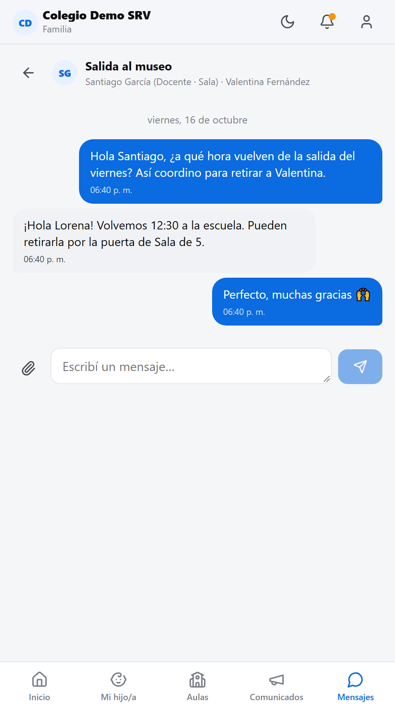
Chat familia ↔ docente
Capítulo 4
Docentes.
Docentes de todos los niveles
Mis materias
En Materias ves todas tus materias agrupadas por curso, con el avance de carga de cada período (barra verde = completo).
- Si te falta cargar notas, aparece un aviso naranja: "Faltan N notas".
- Estado académico → muestra, por curso, qué alumnos tienen materias en riesgo y su asistencia.
- El candado 🔒 indica un período cerrado por la dirección.
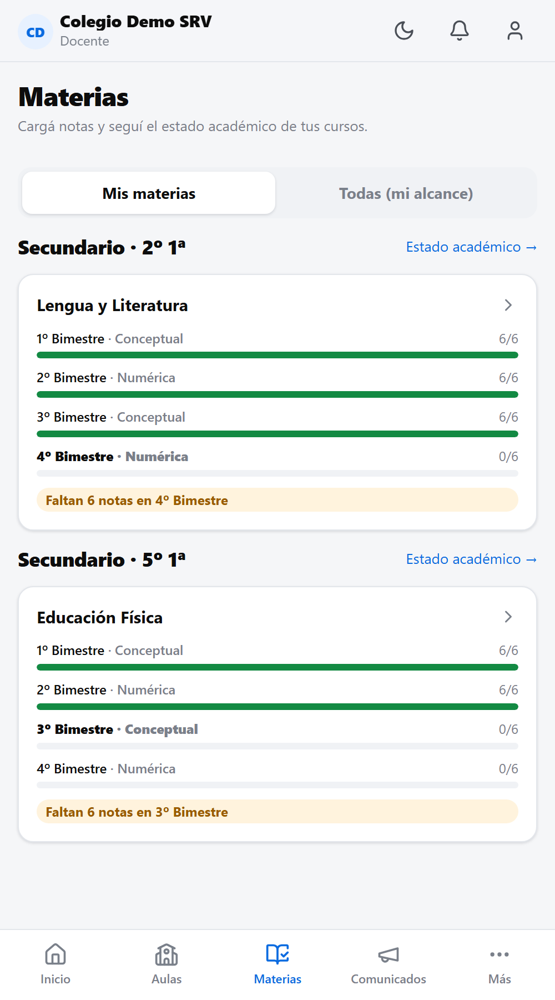
Panel "Mis materias"
Cargar notas
- Tocá la materia. La planilla se abre en el primer período pendiente; podés cambiar de período arriba.
- Cargá cada nota. El tipo depende del período: numérica, conceptual (lista desplegable) o informe (texto).
- Con 💬 agregás una observación que se ve en el boletín.
- Tocá Guardar (botón naranja). No se guarda nada hasta que lo tocás.
⚡Carga rápida: elegí una nota y tocá Poner a todos (o Solo a los vacíos). Después corregí las excepciones una por una y guardá. Ideal para cargar un curso entero en segundos.
Las familias ven las notas recién cuando la escuela publica el boletín. Si un período está cerrado, pedile a la dirección que lo reabra para corregir.
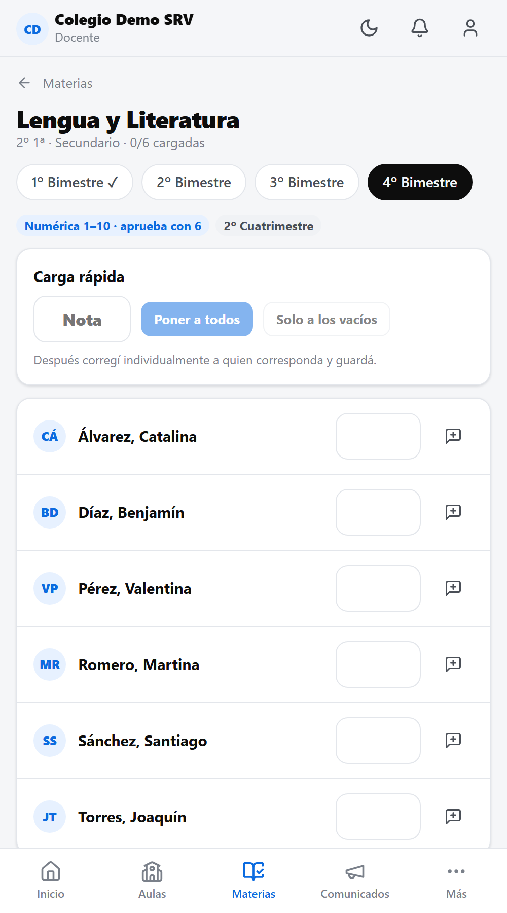
Planilla con carga rápida
Publicar en el aula
- Entrá a Aulas y elegí el curso.
- Tocá "Compartí material, un video o una tarea…".
- Elegí Material o Tarea (con fecha de entrega) y la materia.
- Escribí título y descripción. Podés:
- Pegar links: los videos de YouTube se ven dentro del aula.
- Adjuntar archivos: PDF, Word, PowerPoint, fotos, audio o video.
- Dejá marcado "Avisar a las familias" y tocá Publicar.
🎬Las fotos se optimizan solas antes de subirse. Para videos largos, subilos a YouTube como "no listado" y pegá el link: se ven igual y no ocupan espacio de la escuela.
Desde el encabezado del aula también tenés accesos directos a Notas de tus materias y al Estado académico del curso.
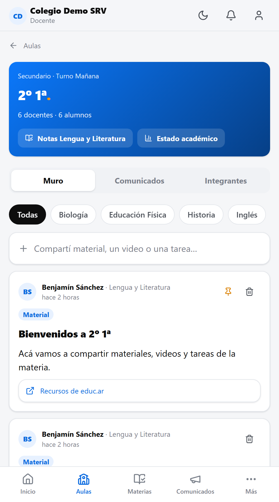
Aula vista por el docente
Enviar un comunicado a tus cursos
- En Comunicados tocá + Nuevo (o desde el aula: Nuevo comunicado a…).
- En ¿Para quién? elegí uno o varios de tus cursos. Opcional: enviar copia a los docentes.
- Escribí título y mensaje; adjuntá archivos si hace falta.
- Marcá "Pedir confirmación de lectura" si necesitás que las familias confirmen (autorizaciones, reuniones).
- Tocá Enviar comunicado. Llega al instante por la app y notificación.
Mis archivos
En Archivos ves todo lo que subiste, cuánto pesa y en qué aula está. Podés abrirlo o eliminarlo para liberar espacio.
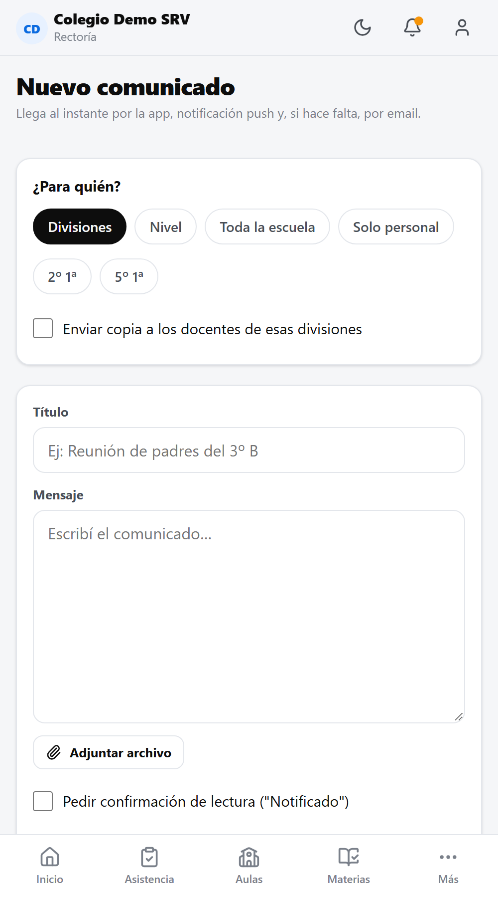
Redactar un comunicado
Capítulo 5
Preceptoría.
PreceptoresTambién Dirección y Rectoría
Tomar asistencia
- Entrá a Asistencia. Arriba elegís la fecha (por defecto, hoy).
- Elegí el curso. El círculo verde ✓ indica los cursos ya tomados.
- Todos empiezan presentes. Tocá el estado de un alumno para cambiarlo: Presente → Ausente → Tarde → Retiro ant.
- Si la falta está justificada, marcá "Justificada".
- Tocá Guardar. Sentryx pasa solo al siguiente curso pendiente.
⏱️Un curso de 30 alumnos con 3 ausentes se toma con 4 toques. Las familias ven el estado "Ausente hoy" en su inicio y, si hay alertas configuradas, se disparan solas.
Corregir o justificar después
Volvé a elegir la fecha y el curso: la asistencia ya tomada se puede corregir y guardar de nuevo.
Valor de cada inasistencia
Lo define la escuela por nivel (por ejemplo, en Secundario: ausente = 1, tarde = ¼, retiro anticipado = ½).
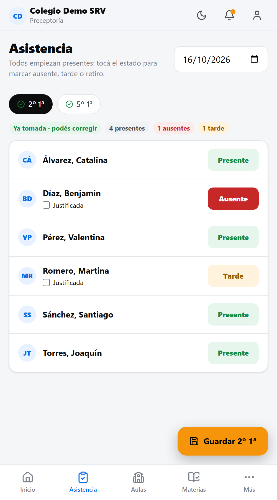
Toma de asistencia
Capítulo 6
Conducción.
Representante LegalDirecciónVicedirecciónRectoría
Panel de alertas
En Alertas ves los alumnos que superan las reglas de asistencia, ordenados por gravedad: Crítica, Atención e Info.
- Tomar seguimiento: indica que alguien se está ocupando.
- Resolver: cierra la alerta.
- Escribir a la familia: abre un mensaje sobre ese alumno.
- Si se justifica una falta y el alumno deja de cumplir la regla, la alerta se resuelve sola.
Configurar las reglas (normativa)
- En Alertas → pestaña Reglas → + Nueva regla.
- Elegí el tipo: total de faltas, días consecutivos, porcentaje o faltas en los últimos N días.
- Definí el umbral, el nivel, la gravedad y si se avisa automáticamente a la familia.
- Guardá: Sentryx recalcula todas las alertas.
Las reglas que vienen cargadas son ejemplos: ajustalas a la normativa vigente de tu jurisdicción.
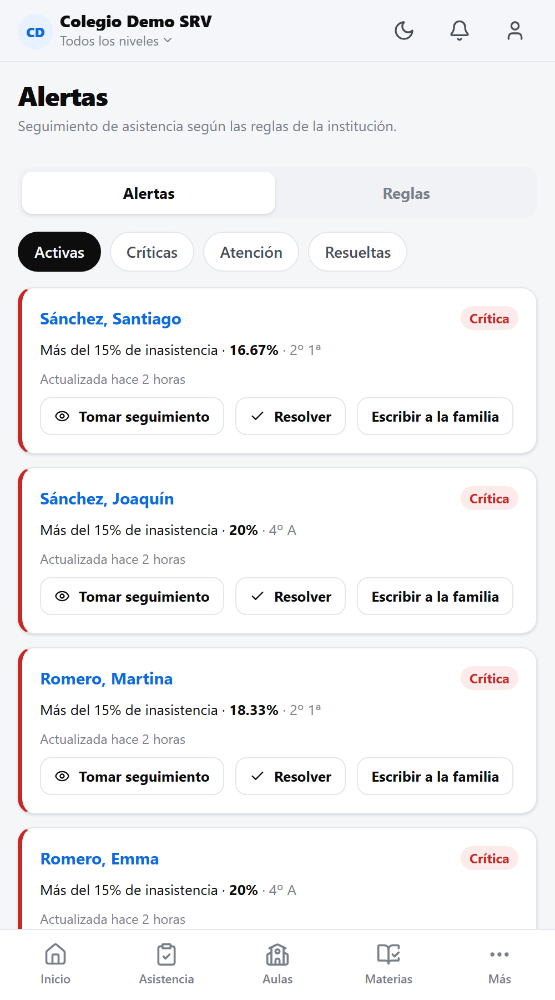
Panel de alertas
Seguir la lectura de un comunicado
Al abrir un comunicado que enviaste ves cuántos lo leyeron y cuántos lo confirmaron, y la lista de destinatarios con el alumno por el que lo recibieron.
- Filtrá por Sin leer o Sin confirmar.
- Recordar a pendientes envía un recordatorio solo a quienes faltan.
- En Comunicados → Enviados ves el porcentaje de lectura de cada envío.
Comunicados a todo el colegio
Conducción, Secretaría y Administración pueden enviar a Toda la escuela, a uno o más niveles, o solo al personal. Marcalo como urgente para que también llegue por email.
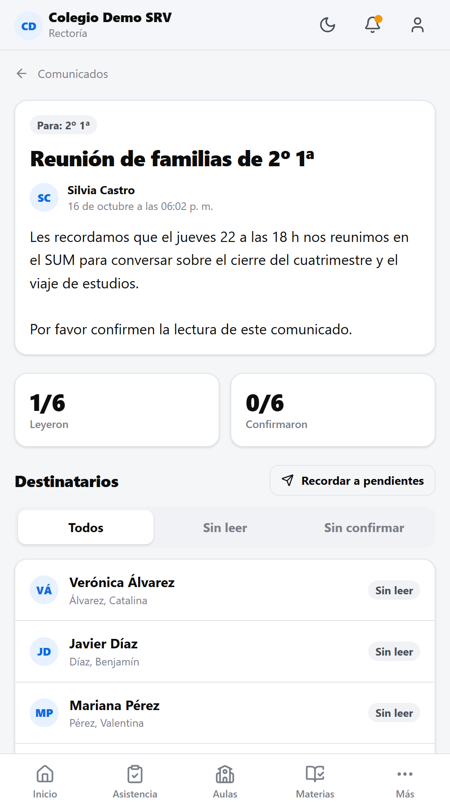
Estadísticas de lectura
Cerrar períodos y publicar boletines
🔒 Cerrar un período Dirección
Desde cualquier planilla de notas, en
Cierre del período →
Cerrar período. Los docentes ya no pueden modificar las notas de ese período en todo el nivel. Se puede
reabrir para correcciones.
📢 Publicar el boletín Dirección · Secretaría
En la planilla,
Publicar boletín a familias. Las familias de ese curso reciben un aviso y ven las notas del período. Hasta entonces, las notas son internas.
📊 Estado académico
Por curso: promedio, materias en riesgo y asistencia de cada alumno, con filtro "En riesgo". Desde
Materias o el encabezado del aula.
🖨️ Imprimir boletines
En la ficha del alumno →
Boletín →
Imprimir. Sale con encabezado del colegio y espacios de firma; también se puede guardar como PDF.
Capítulo 7
Administración.
Representante LegalSecretaríaAdministración
Datos del colegio y escudo
- Administración → pestaña Institución.
- Tocá Subir escudo y elegí una imagen PNG o JPG.
- Completá nombre, CUE, teléfono, email y dirección, y tocá Guardar.
- Copiá el link de ingreso y compartilo con familias y personal (WhatsApp, email o impreso con un código QR).
🎨El escudo y el nombre identifican al colegio en toda la app y en la pantalla de ingreso. La marca Sentryx · SRV se mantiene.
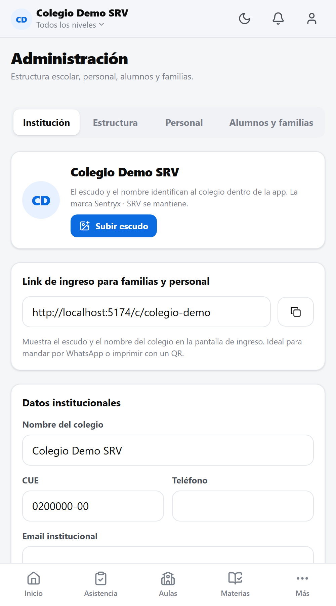
Pestaña Institución
Armar la estructura: niveles, materias y aulas
En Administración → Estructura (Representante Legal o Dirección general). Elegí el nivel arriba y seguí este orden:
- Materias: escribí el nombre (ej. "Matemática") y tocá +.
- Aulas (divisiones): en "Divisiones y docentes" completá el nombre (ej. "3º B"), el año y el turno, y tocá + División.
- Docentes: en la tarjeta de cada aula, junto a cada materia, usá + Asignar docente.
- Períodos: revisá el tipo de cada período (conceptual, numérica o informe) y cargá sus fechas.
- Escala: en "Calificación y asistencia" podés editar la escala conceptual del nivel.
📅Las aulas pertenecen al ciclo lectivo vigente. Al empezar un año nuevo se crea el ciclo y se arman las divisiones de ese año.
Dar de alta al personal
- Administración → Personal → Agregar.
- Nombre, apellido, email (si tiene) y DNI.
- Elegí el rol y, si corresponde, el nivel a cargo (ej. Rectoría → Secundario). Para preceptores podés elegir sus cursos.
- Guardá. Quien tiene email recibe su acceso automáticamente; si no tiene, aparece una contraseña temporal para imprimir y entregar.
Una persona puede tener más de un rol (por ejemplo, docente y preceptora). Con Desactivar le quitás el acceso sin borrar su historial.
Cargar alumnos y familias
👤 Uno por uno
- Alumnos y familias → Alta individual.
- Datos del alumno y su división.
- Hasta 4 familiares: nombre, DNI, vínculo, email y teléfono.
- Guardar alumno y familia.
📄 Todos juntos (CSV)
- Descargar plantilla y completala en Excel (una fila por alumno, hasta 2 familiares).
- Guardala como CSV.
- Elegir CSV → revisá el resumen → Importar.
- Los hermanos se vinculan solos a la misma familia (por DNI o email): cada familia tiene un solo usuario para todos sus hijos.
- Al terminar aparece la lista de credenciales (usuario y contraseña temporal) para imprimir o descargar. Se muestra una sola vez.
- Si una fila tiene un error (por ejemplo, una división mal escrita), se informa el número de fila y el resto se importa igual.
Archivos y espacio de almacenamiento
En Archivos → Uso ves cuánto espacio usa el colegio, el detalle por tipo (documentos, imágenes, videos) y el ranking por docente. Desde Todos podés buscar y eliminar archivos para liberar espacio.
🗂️Límites por defecto: 25 MB por archivo y 300 MB por video. Solo se aceptan formatos de clase (PDF, Office, imágenes, audio y video).
Capítulo 8
Preguntas frecuentes.
No me llegan las notificaciones.
Verificá que las activaste desde Inicio y que el celular no bloquea las notificaciones del navegador. En iPhone, Sentryx tiene que estar agregado a la pantalla de inicio. Igual, todo queda en la app y en la campana.
Tengo dos hijos en el colegio, ¿necesito dos usuarios?
No. Con un solo usuario ves a todos tus hijos; en Inicio aparece una tarjeta por cada uno.
Un familiar no tiene email.
Ingresa con su DNI y la contraseña temporal que le entrega la escuela. Si la olvida, la secretaría se la restablece.
No veo las notas de mi hijo.
Las notas se ven cuando la escuela publica el boletín de ese período. Hasta entonces, los docentes pueden estar cargándolas.
Un docente no ve su curso en Aulas o Materias.
Falta asignarle la materia en esa división: Administración → Estructura, en la tarjeta del aula.
Me equivoqué en una nota y el período está cerrado.
Pedile a la dirección que reabra el período (o que corrija la nota): queda registrado quién hizo el cambio y cuándo.
¿Quién puede ver los mensajes privados?
Solo las personas que participan en la conversación. Si un docente suma a un directivo, aparece un aviso visible en el chat.
¿Puedo usarlo en la computadora?
Sí. En pantallas grandes el menú aparece a la izquierda; en el celular, abajo. Es la misma cuenta y la misma información.
¿Necesitás ayuda?
Primero consultá con la secretaría de tu colegio: puede restablecer contraseñas, corregir datos y vincular familias.
Para soporte técnico de la plataforma: wearesrv.com
Sentryx · Plataforma escolar desarrollada por SRV. Las imágenes de este manual corresponden a un colegio de demostración con datos ficticios.